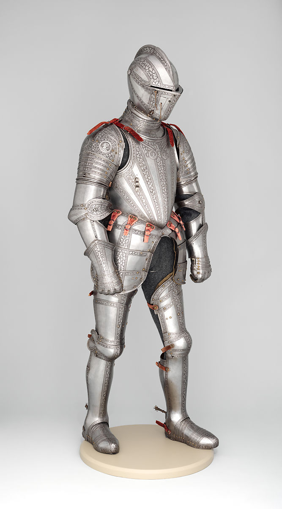

When it comes to Blacksmithing in the modern era, people of franchise fandoms, collectors, cosplayers, and overall anyone who has a nack for blades, armor helmets etc have a dream of one day owning their own weapon based of their favorite series or just to collect. These people want objects that live up to the name.
Because of this constant and high demand of precision, Blacksmiths can spend hours getting dimensions just right to fit the buyers needs.
